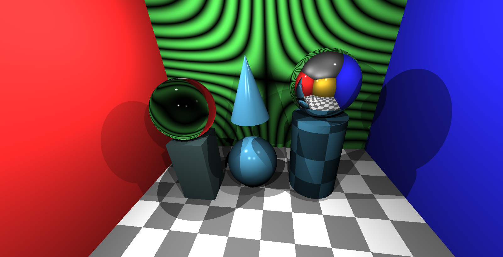

COS426 Assignment 3a Rendering Ray Tracer — Writeup
Switch to: Interactive Editor
- (0.0) Plane
- (2.0) Triangle
- (2.0) Sphere
- (2.0) Box
- (2.0) Cylinder
- (3.0) Cone
- (1.0) Shadows
- (3.0) Soft shadows
- (2.0) Transmission
- (1.0) Checkerboard
- (1.5) Phong material
- (1.5) Special material
- (1.0) Scene
- (1.0) Art
Plane
This feature was implemented by the course staff. I used it as an example of how to calculate the intersection with primitives.
Here is an example output where the planes are used for cornell box :

I did not encounter any particular challenges in implementing this.
Triangle
We first checked whether the ray intersected with the plane the triangle was on. Then, we used the algebraic method to determine whether the point of intersection between the ray and plane was within the given triangle.
scene=mesh

Sphere
We used the implementation from the lecture slides. We calculate t using the geometric method (intersection exists for positive t).
scene=default

Box
We used the implementation from the lecture sldies. Since we know the box is axis-aligned, we find the intersection between the ray and each normal plane (norm = (1, 0, 0), (-1, 0, 0), etc.) using distances of pmax.x, pmin.x, etc. For planes that intersected, we then checked whether the interseciton point was within the bounds of the box by comparing to pmin and pmax values. We recorded the distances between the ray origin and any intersection points, and returned the closest one as the final intersection.
scene=default
Cylinder
For the open cylinder, we used the implementation from the precept slides. We first solved for t based on the given equation using the ray origin and direction and cylinder axis and center (intersection exists for positive t). Then, we calculated the distance from the center to the intersection point to calculate whether the intersection point was past the given length of the cylinder. For getIntersectDisc, we calculated whether the ray intersected the plane that the circle was on, and then calculated whether the intersection point was within the disc given its radius.
scene=default
Cone
For the open cone, we used the implementation from the precept slides. We first solved for t based on the given equation using the ray origin and direction and cone axis and apex (intersection exists for positive t). Then, we calculated the distance from the apex to the intersection point to calculate whether the intersection point was past the given length of the cone. The getIntersectDisc was the same as for cylinder.
scene=default
Shadows
We followed the lecture slides. First, we found the nearest intersection to the ray using the given rayIntersectsScene function. We then compared the distance from the ray to the nearest intersection to the distance to the light source, and returned shadow if the former was shorter than the latter.
scene=default
Soft shadows
(Your description of your implentation of Soft shadows goes here...)
Transmission
We used the GLSL refract function with the given direction, normal vector, and eta. (Shown in left sphere.)
scene=default
Checkerboard
We used the given function in the lecture slides for 2D (floor(x) + floor(y)) but added the floor(z) dimension for the 3D checkerboard.
scene=default
Phong material
We used the given formula from the lecture slides, using the material shininess coefficients and and specular. We divided by attenuation and multipled by a constant to achieve a brightness similar to the examples.
scene=default
Special material
We multipled the color by a random number between 0 and 1, which was calculated by taking the absolute value of the sin of a random number calculated incorporating the position vector.
scene=default
Scene
(Your description of your implentation of Scene goes here...)
You can include as many results as you want, but please at least include the following results:
scene=myScene

Art
(Your description of your implentation of Art goes here...)